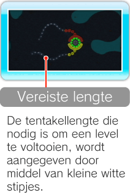
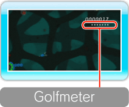
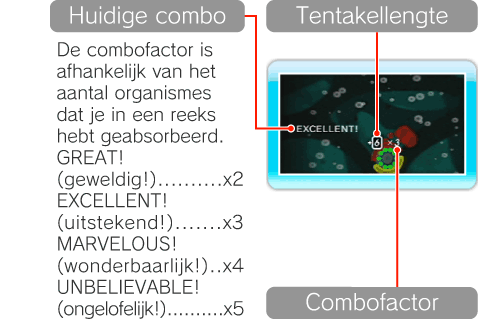
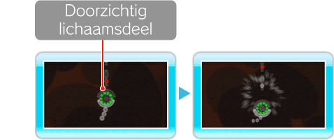

-

Levelstand
In de levelstand is het de bedoeling al je tentakels te verlengen tot de vereiste lengte om het level te voltooien. Tentakels die de vereiste lengte hebben
bereikt groeien niet verder en breken niet als ze organismes van een andere kleur aanraken. Je verliest dan echter wel een leven.
Opmerking: in de levelstand wordt er geen score bijgehouden.
-

Golven en de golfmeter
Organismes verschij-nen in golven. De witte stippen in de golfmeter geven aan hoeveel organismes er nodig zijn om de volgende golf te laten verschijnen.
Met elk organisme dat je absorbeert, neemt de golfmeter met één stip af. De volgende golf verschijnt als alle witte stipjes weg zijn.
-
De score
Het aantal punten dat aan je score wordt toegevoegd, hangt af van de lengte van de tentakel waarmee je een organisme absorbeert.
Je kunt combo’s maken door binnen korte tijd een grote hoeveelheid organismes te absorberen zonder schade op te lopen.
Een combo vermenigvuldigt het aantal punten dat je krijgt met een factor van 2–5. Het scherm hieronder geeft een voorbeeld:
6 (tentakellengte) x 3（combofactor）= 18 punten.

-
Doorzichtig deel
In de slangenstand heeft je organisme een doorzichtig lichaamsdeel. Organismes die dit lichaamsdeel aanraken worden vernietigd, zonder dat jij schade oploopt.
Je kunt er echter geen organismes mee absorberen of er je tentakel mee verlengen.
